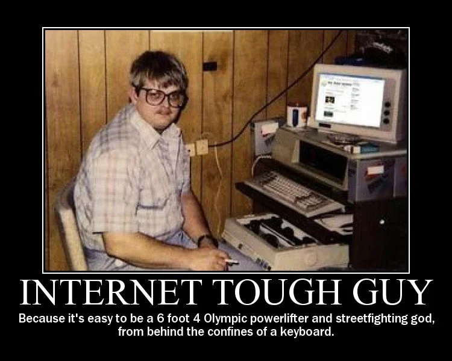
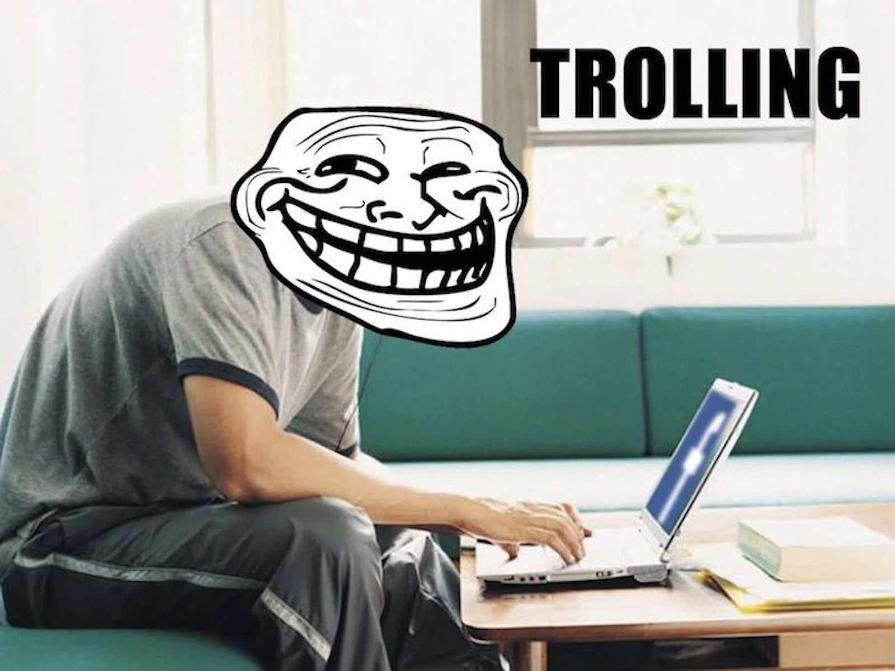

Cyberbullying: What it is and how to stop it
What is cyberbullying?
Cyberbullying is bullying that takes place over digital devices like cell phones, computers, and tablets. Cyberbullying can occur through SMS, Text, and apps, or online in social media, forums, or gaming where people can view, participate in, or share content. Cyberbullying includes sending, posting, or sharing negative, harmful, false, or mean content about someone else. It can include sharing personal or private information about someone else causing embarrassment or humiliation. Some cyberbullying crosses the line into unlawful or criminal behavior.
The most common places where cyberbullying occurs are:
- Social Media, such as Facebook, Instagram, Snapchat, and Tik Tok
- Text messaging and messaging apps on mobile or tablet devices
- Instant messaging, direct messaging, and online chatting over the internet
- Online forums, chat rooms, and message boards, such as Reddit
- Online gaming communities
Types of cyberbullying

1. Harrassment
When someone is being harassed online, they are being subjected to a string of abusive messages or efforts to contact them by one person or a group of people. People can be harassed through social media as well as through their mobile phone (texting and calling) and email. Most of the contact the victim will receive will be of a malicious or threatening nature.

2. Cyberstalking
Cyberstalking is a particularly serious form of cyberbullying that can extend to threats of physical harm to the person being targeted. It can include monitoring, false accusations, threats, and is often accompanied by offline stalking. It is a criminal offense and can result in a restraining order, probation, and even jail time for the perpetrator.
Signs of Cyberstalking:
Some signs that you are experiencing cyberstalking include someone sending you too many messages, a person sending you inappropriate messages, liking all of your old posts on social media, manipulating you into interacting with them online, or trolling you. Online impersonality, GPS tracking, threatening messages, catfishing, and doxing are also behavior associated with cyberstalking.

3. Dissing
Dissing refers to the act of a bully spreading cruel information about their target through public posts or private messages to either ruin their reputation or relationships with other people. In these situations, the bully tends to have a personal relationship with the victim, either as an acquaintance or as a friend.
4. Doxing
Doxxing comes from the term “dropping documents”, and is the act of publishing someone’s personal, confidential information on the internet, often with malicious intent. This act can rob individuals of their online anonymity, subjecting them to various risks in both the digital and physical worlds. The primary objective is to intimidate, harm, or otherwise exploit the individual whose information has been laid bare.
5. Trolling
Trolling is when a bully will seek out to intentionally upset others by posting inflammatory comments online. Trolling may not always be a form of cyberbullying, but it can be used as a tool to cyberbully when done with malicious and harmful intent. These bullies tend to be more detached from their victims, and do not have a personal relationship.
Other Examples
Not all forms of cyberbullying are the same, and cyberbullies use other tactics to ensure that their target feels as bad as possible. Some tactics include:
- Taking nude or otherwise degrading photos of a person without their consent
- Sharing or posting nude pictures with a wide audience to embarrass the person they are cyberbullying
- Sharing personal information about a person on a public website that could cause them to feel unsafe
- Physically bullying someone in school and getting someone else to record it so that it can be watched and passed around later